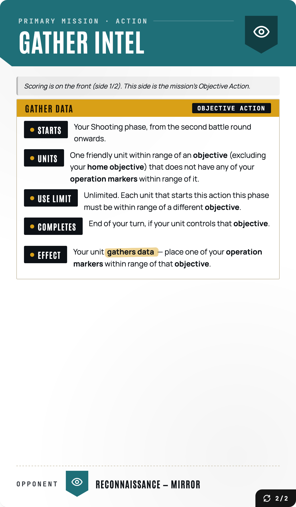
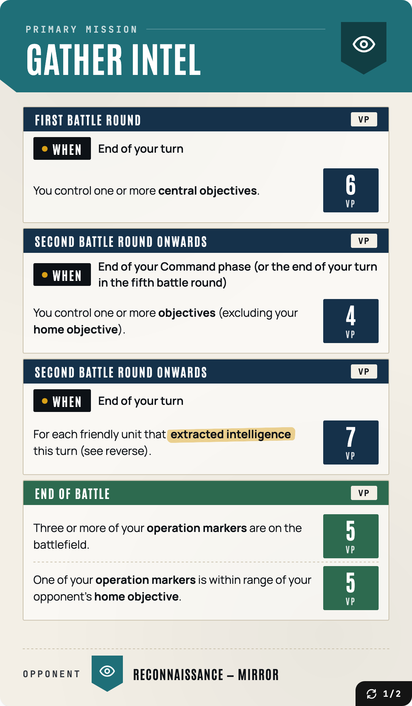
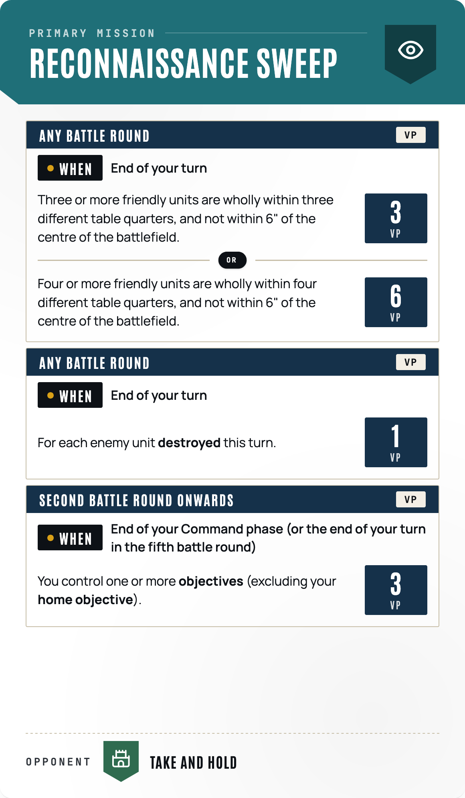
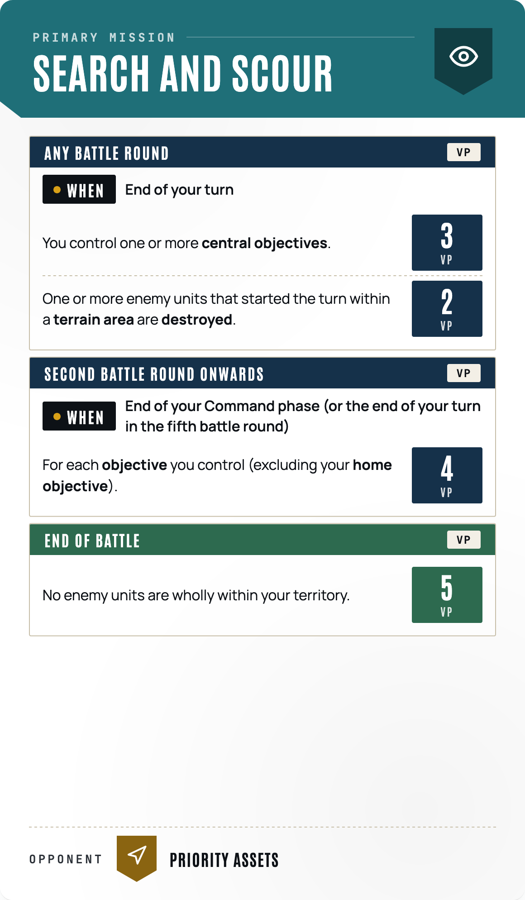
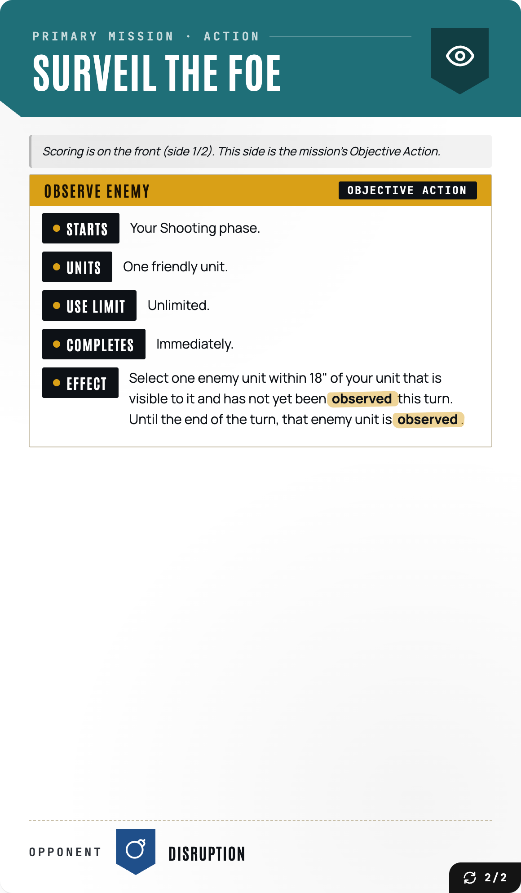
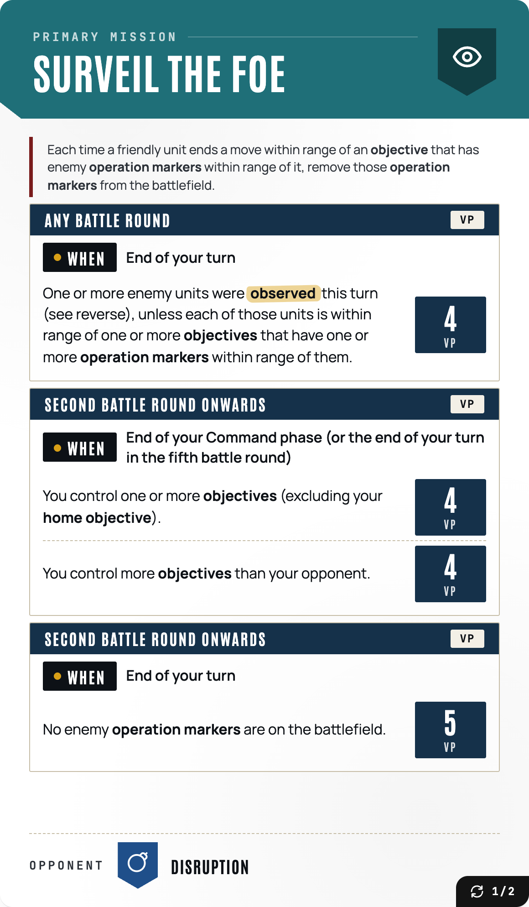
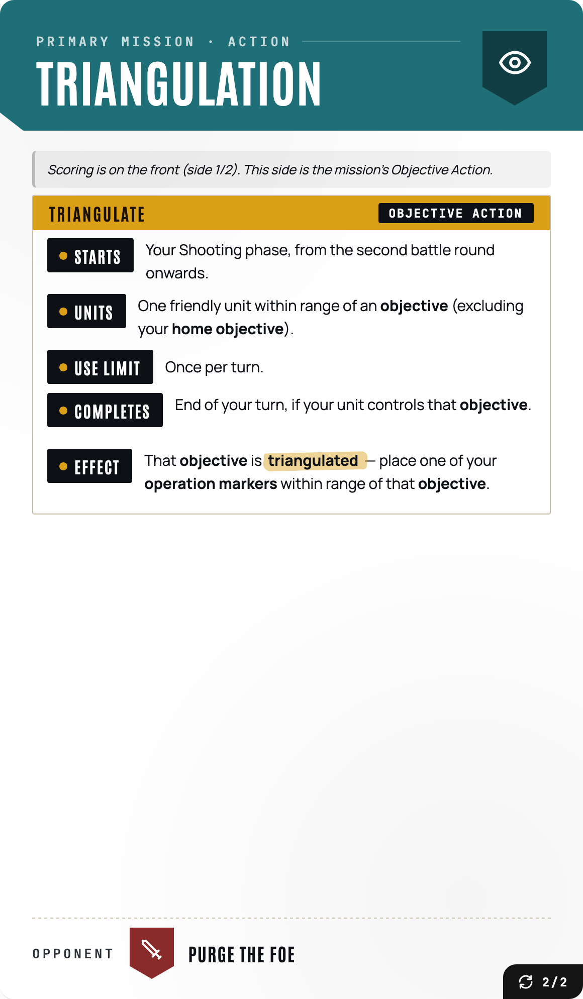
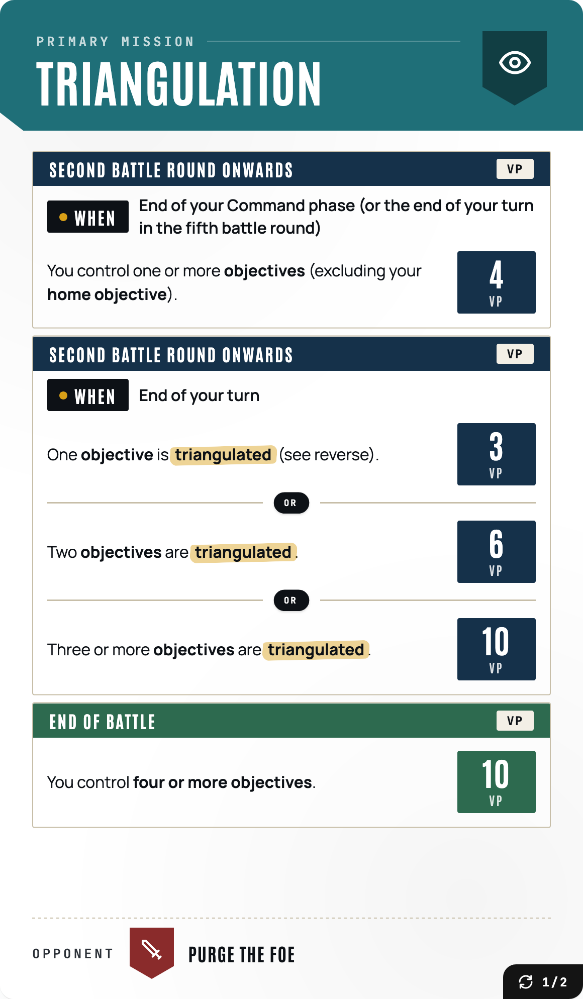

Reconnaissance
All decks

gather intel back 2 2 rule

gather intel vs teal 1 2

reconnaissance sweep vs green

search and scour vs yellow

surveil the foe back 2 2 rule

surveil the foe vs blue 1 2

triangulation back 2 2 rule

triangulation vs red 1 2